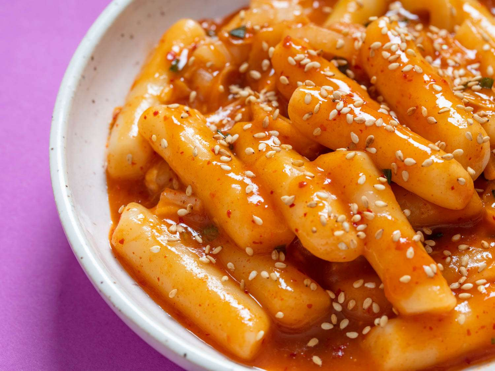

A super easy recipe for Korean BBQ beef with the most flavorful marinade! The thin slices of meat cook
quickly, and it's so tender!!! It is also often stir-fried in a pan in home cooking.
GIMBAP
Gimbap, also romanized as kimbap, is a Korean dish made from cooked rice and ingredients such as
vegetables, fish, and meats that are rolled in gim—dried sheets of seaweed..
TTEOK-BOKKI

Tteokbokki, or simmered rice cake, is a popular Korean food made from small-sized garae-tteok called
tteokmyeon or commonly tteokbokki-tteok.Eomuk, boiled eggs, and scallions are some..
JAPCHAE
Japchae is a savory and slightly sweet dish of stir-fried glass noodles and vegetables that is popular
in Korean cuisine.Sweet potato starch noodles stir fried with vegetableS..
KIMCHI
Kimchi, is a traditional Korean side dish of salted and fermented vegetables, such as napa cabbage and
Korean radish. A wide selection of seasonings are used, including gochugaru..